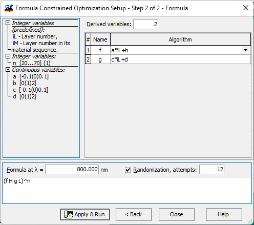
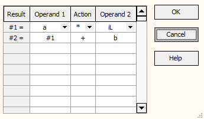

Formula Constrained Optimization - Formula
Formula Constrained Optimization - Formula
Navigation: OptiLayer Menu Commands > Synthesis Menu > Formula Constrained Optimization >
Formula Constrained Optimization - Formula
` <formula_constrained_vars.html>`__ ` <formula_constrained_optimizati.html>`__ ` <sensitivity_directed_refinemen.html>`__
Derived variables and formulas are specified in the second step of the Formula Constrained Optimization Setup dialog.

On the left pane of this dialog, a short list of already defined variables (see Step 1) is listed for convenience. On the right pane, Derived Variables may be defined when necessary. It is necessary to set the number of Derived Variables, set a unique name for each variable, and program an algorithm defining an expression for each Derived Variable. Defining the algorithm is done in a special pop-up window.

The algorithm is defined as a sequence of operations connecting results starting with #1 until the last one, integer and continuous independent variables, constants connected with arithmetic operators. This approach is quite similar to the User-Defined Targets editor.
Below, the same editors for the control wavelength and the formula itself are present. Randomization and attempts options can also be adjusted at this second step of configuration. Click the Apply & Run button to start computations. The Back button allows you to return to Step 1 when corrections are necessary.
 Note 1: Formula Constrained Optimization uses a
specialized modification of the SQP (Sequential Quadratic
Programming) optimization method. Therefore, the settings in the
Analysis and Synthesis
Options dialog do not affect
computations.
Note 1: Formula Constrained Optimization uses a
specialized modification of the SQP (Sequential Quadratic
Programming) optimization method. Therefore, the settings in the
Analysis and Synthesis
Options dialog do not affect
computations.
 Note 2: Computations can be terminated using the
Terminate button in the Refinement
window as usual.
Note 2: Computations can be terminated using the
Terminate button in the Refinement
window as usual.